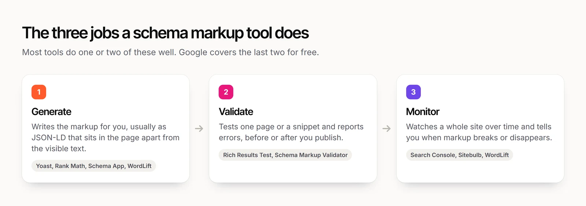
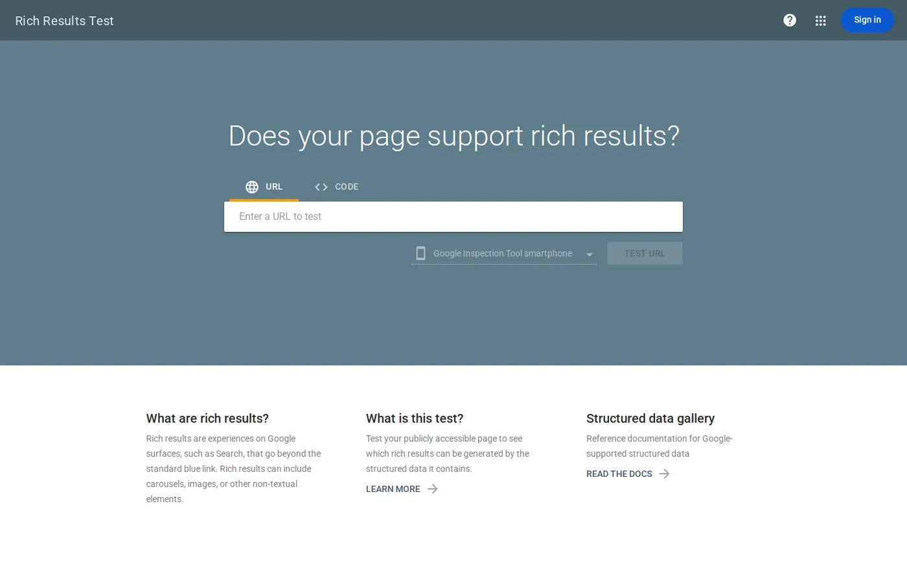
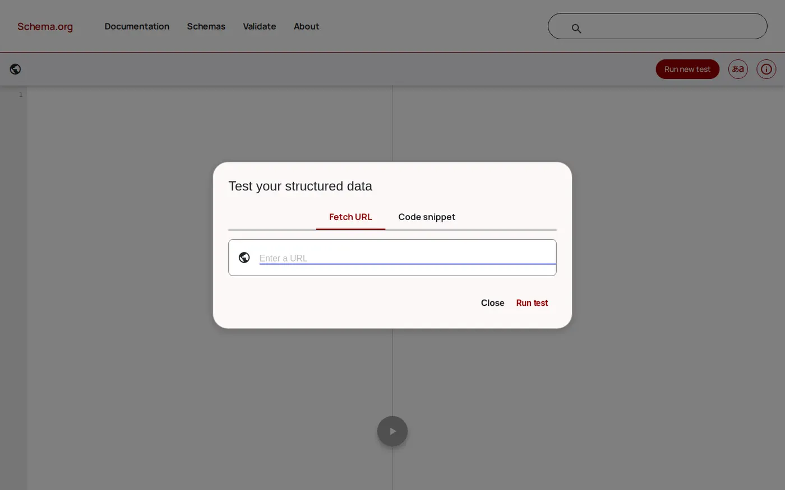
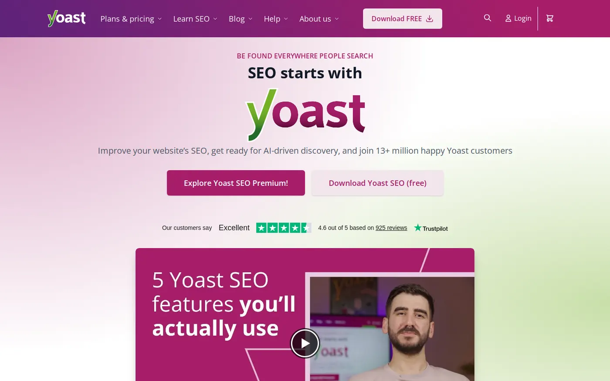
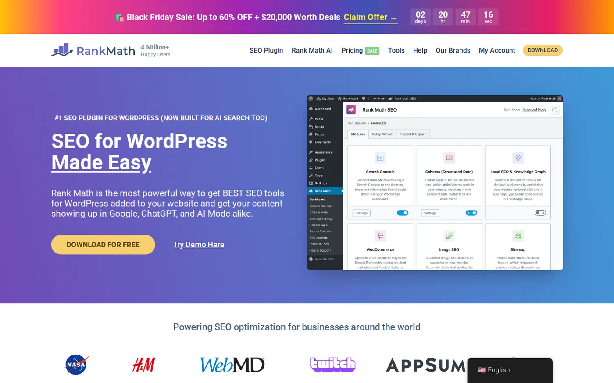
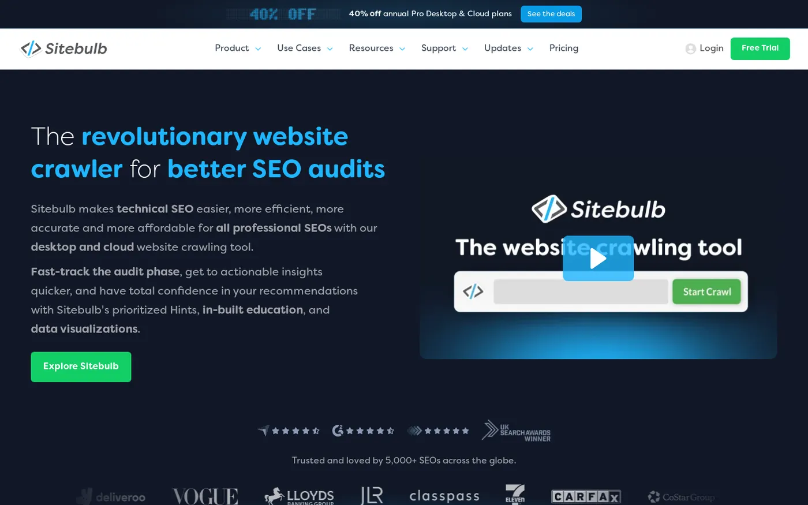
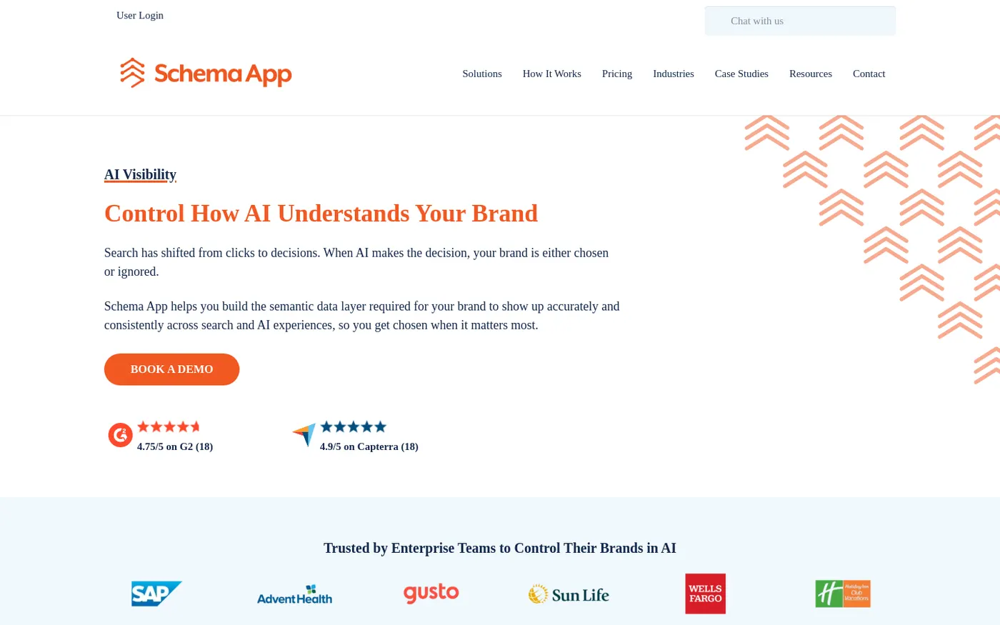
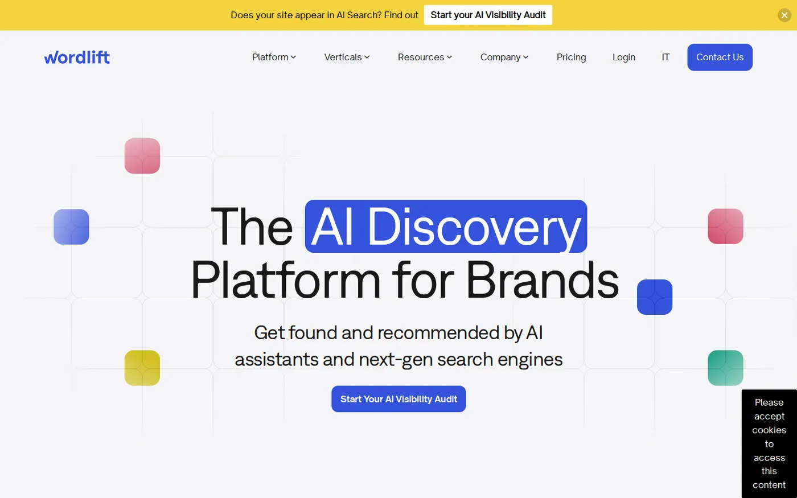
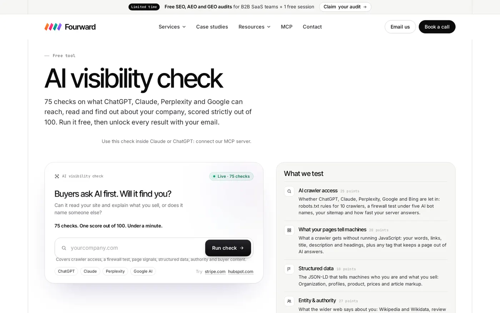

On this page
Most sites need three kinds of schema markup tool: one that writes the code, one that tests it and one that watches it after launch. Google gives you the testing and watching tools for free. So the real choice is the generator: a WordPress plugin for most small sites, or a paid platform for large ones.
This post compares 9 tools on what they output, what they catch and what they cost. Every fact comes from each company's own website or documentation, checked on 25 November 2026.
I work at Fourward, which publishes this guide. One entry is ours: the free AI visibility check, listed last. Every other fact links to that company's own website or documentation, checked on 25 November 2026. No vendor paid to be included or knew I was writing this.
- A schema markup tool is software that writes, tests or watches the structured data on your pages. Structured data is code that labels facts, such as a company name or an event date, so machines read them correctly.
- The tools do three jobs: generate, validate and monitor. Google's validators and Search Console cover the last two for free.
- Paid generators run from $8.99 a month (Rank Math Pro at renewal) and $118.80 a year (Yoast SEO Premium) to $879 a month (WordLift, billed yearly). Schema App is custom-priced.
- Valid markup is not a promise. Google says it "does not guarantee that your structured data will show up in search results".
What a schema markup tool does
Schema markup is a type of structured data. It uses the Schema.org vocabulary, a shared list of types such as Organization, Product and Event, with properties such as name, price and start date.

I lead field marketing and events at Fourward, and my work covers executive dinners and summits. An event page shows why markup matters. The page has a name, a date and a venue, and markup labels each one so a machine can't misread them.
The tools in this guide do one or more of three jobs:
- GenerateWrite the markup for you, usually as JSON-LD. JSON-LD is a block of code in JSON (JavaScript Object Notation) format that sits in the page apart from the visible text.
- ValidateTest one page or a code snippet and report errors before or after you publish.
- MonitorWatch the markup across the whole site over time, so you notice when a site change breaks it.
Google needs the markup in one of three formats to show rich results. Rich results are the extra details Google sometimes adds to a search result, such as event dates or prices. Google's rule is to "mark up your site's pages using one of three supported formats".
You need one tool for each job. The free Google tools cover testing and watching, so most of your money goes on generating.
How I picked them
I chose tools for each of the three jobs, then checked each one's own website or documentation on 25 November 2026. For every tool I noted the same things: the job it does, what it outputs, what it catches and what it costs.
I didn't create accounts or run tests, so nothing here claims hands-on results. The order runs from the free Google tools to the paid ones, with our own free check last. If you only want free tools, our guide to free technical SEO tools covers more of them.
The best schema markup tools at a glance
The same facts for every tool. Scroll the table sideways on a phone.
| Tool | Job | What it outputs | What it catches | Starts at |
|---|---|---|---|---|
| Rich Results Test | Validate | The Google rich results a page can get | Problems with markup for Google's features | Free |
| Schema Markup Validator | Validate | Every Schema.org item on a page | Schema.org problems in any type, no Google warnings | Free |
| Google Search Console | Monitor | Rich result reports for your site | Invalid items, but not every item | Free |
| Yoast SEO | Generate | Structured data, added automatically on WordPress | Not listed: test the output | Premium $118.80 a year, ex VAT |
| Rank Math | Generate | Pre-built or custom schema on WordPress | Lists validating schema with Google | Pro renews at $8.99 a month |
| Sitebulb | Validate at scale | A structured data report from a full crawl | Schema.org and Google feature problems on every crawled page | Pro licence, free trial |
| Schema App | Generate and manage | Schema markup linked into a knowledge graph | Not stated on its pricing page | Custom |
| WordLift | Generate and monitor | A knowledge graph and schema markup | Daily checks on 50 URLs per site | $879 a month, billed yearly |
| Fourward AI visibility check | Check AI readability | A score on what AI engines can read | Missing company and product markup, plus crawler blocks | Free |
1. Google Rich Results Test
Best for Checking whether Google can build rich results from a page's markup.

Google calls the Rich Results Test "The official Google tool for testing your structured data to see which Google rich results can be generated". You give it a page, and it shows which rich results that page's markup can produce.
- JobValidate, against Google's rules.
- OutputsThe Google rich results the page's markup can produce.
- MissesSchema.org types that Google doesn't use for rich results. Use the Schema Markup Validator for those.
- PriceFree.
My take Run it on one page of every template before launch. A template is the page design that many pages share, so one fix in the template fixes all of them.
2. Schema Markup Validator
Best for Checking any Schema.org markup, including types Google doesn't show as rich results.

The Schema Markup Validator reads every structured data item on a page against the Schema.org vocabulary. Google's documentation says it lets you "Validate all Schema.org-based structured data that's embedded in web pages, without Google feature specific warnings."
- JobValidate, against Schema.org's rules.
- OutputsEach structured data item found on the page, with its properties.
- MissesWhether Google will show a rich result for the page.
- PriceFree.
My take Use it next to the Rich Results Test, not instead of it. One checks the shared vocabulary, and the other checks Google's own rules.
3. Google Search Console
Best for Watching structured data across your whole site after it goes live, for free.

Search Console is Google's free dashboard for site owners. Google says its rich result reports "show structured data (and its validity) found on your site." You need to verify that you own the site before you see them.
- JobMonitor.
- OutputsRich result reports that split items into valid and invalid.
- CatchesInvalid items. Google says "An invalid item has at least one critical issue preventing it from appearing as a rich result."
- MissesSome items. Google says "The reports aren’t a comprehensive list of all detected items."
- PriceFree.
My take Check these reports after every release that changes a template. A sudden rise in invalid items tells you which change to look at.
4. Yoast SEO
Best for WordPress sites that want structured data added without writing code.

Yoast SEO is a WordPress plugin for SEO (search engine optimization). Its Premium page says: "Structured data, a standardized way of describing your content to machines, is generated automatically."
- JobGenerate, on WordPress.
- OutputsStructured data, generated automatically.
- CatchesValidation isn't listed on the page, so test the output in tools 1 and 2.
- PriceYoast SEO Premium is $118.80 a year, excluding VAT (value added tax).
My take The least effort if your site runs on WordPress. Automatic markup follows the plugin's rules, so test special pages, such as event pages, in the two Google tools.
5. Rank Math
Best for WordPress sites that want to choose and edit schema types page by page.

Rank Math is another WordPress search plugin. Its pricing page describes a schema generator: "Choose from a list of pre-built Schema types or create your own." Its plan comparison lists "840+ Schema Types Supported" and "Validate Schema With Google".
- JobGenerate, on WordPress, with a Google check listed.
- OutputsPre-built or custom schema for each page.
- CatchesThe plan table lists validating schema with Google.
- PriceThe Pro plan renews at $8.99 a month plus taxes, billed yearly. A Black Friday discount was running when I checked, and a free version appears in the plan comparison.
My take More control than an automatic plugin, which helps on event, course or product pages. The plan table doesn't make clear which plan includes which schema feature, so confirm that before you buy.
Free check. 75 checks, one score out of 100, under a minute.
6. Sitebulb
Best for Checking the structured data on every page of a site in one crawl.

Sitebulb is a website crawler. A crawler visits each page of your site, the way a search engine does, and reports what it finds. Sitebulb's FAQ says: "Yes, Sitebulb can validate structured data against both Schema.org and Google's Search Feature guidelines (for rich results)."
- JobValidate at scale, whenever you run a crawl.
- OutputsA structured data report across all the pages it crawled.
- CatchesSchema.org problems and Google rich result problems, page by page.
- LimitsThe Pro desktop plan crawls up to 500,000 URLs per audit.
- PriceStructured data is a Pro-only report. The Pro price didn't load on the pricing page when I checked. The free trial matches Pro and needs no credit card.
My take The step up when Search Console isn't enough. You can run it before a release instead of waiting for Google to recrawl. If you already pay for another crawler, our Screaming Frog alternatives guide compares the options.
7. Schema App
Best for Large companies that want schema across many pages managed as one connected system.

Schema App says it "implements advanced schema markup to develop your content knowledge graph". A knowledge graph is a connected map of the things your site talks about, such as your company, products and people, and how they relate.
- JobGenerate and manage, at enterprise scale.
- OutputsSchema markup linked into one content knowledge graph.
- CatchesNot stated on its pricing page.
- PriceCustom. Schema App says: "We offer customized pricing based on the scale and complexity of your enterprise needs."
- Free optionNone. "We do not offer free trials for our enterprise subscription."
My take Built for enterprise sites and priced that way. Ask on the sales call how it watches markup after launch, because the pricing page doesn't say.
8. WordLift
Best for Teams that want AI help building a knowledge graph, with daily checks on key pages.

WordLift sells itself as AI-powered SEO. Its Business+ plan includes a "Knowledge Graph" and "Schema Markup & Data Integration Tools", with a monitoring feature for a set number of pages.
- JobGenerate and monitor.
- OutputsA knowledge graph and schema markup for your pages.
- CatchesThe plan "Monitors 50 URLs per site, checked daily."
- LimitsBusiness+ includes 2,500 URLs and 5 knowledge graphs in total.
- PriceBusiness+ is $879 a month billed yearly, or $1,100 a month billed monthly. Enterprise is custom. The pricing page shows no free trial.
My take The highest listed price in this guide. Daily monitoring covers 50 URLs per site, so point it at the pages that matter most, such as pricing and product pages.
9. Fourward AI visibility check
Best for Seeing whether AI engines can read who you are, structured data included, for free.

The tools above work on schema alone. Fourward's free AI visibility check looks at a wider question: what can AI engines read about your site? It runs 75 checks, and structured data is one of the areas it scores.
- JobCheck what AI engines can read about your site.
- OutputsA score across crawler access, homepage signals, structured data, entity and authority, and AI-ready content.
- CatchesMissing Organization, product and FAQ markup, and blocks that stop AI crawlers reading your pages.
- PriceFree.
It doesn't write or monitor markup, so it won't replace any tool above. Structured data is one part of being understood by AI, and our GEO guide for B2B SaaS covers the rest. GEO (generative engine optimization) is the work of getting named in AI answers.
My take Run it before you buy a schema platform. If AI crawlers are blocked, even perfect markup goes unread.
What schema markup tools cost
What each paid tool's entry price buys, as published on 25 November 2026. The three Google tools are free, so they are left out.
| Tool | Entry plan | Price | What the price covers | Free option |
|---|---|---|---|---|
| Rank Math | Pro | $8.99 a month at renewal, billed yearly | Schema generator, 840+ types listed | Free version |
| Yoast SEO | Premium | $118.80 a year, ex VAT | Automatic structured data | Not checked |
| Sitebulb | Pro desktop | Didn't load when checked | Structured data report, 500,000 URLs per audit | Free trial, no card |
| WordLift | Business+ | $879 a month billed yearly, $1,100 monthly | 2,500 URLs, 50 URLs per site checked daily | None shown |
| Schema App | Enterprise | Custom | Schema markup and a content knowledge graph | No free trial |
The gap between the plugins and the platforms is large. Yoast SEO Premium costs $118.80 a year, while WordLift's Business+ costs $879 a month billed yearly. The platforms earn that price when you have more pages, sites or languages than one person can manage by hand.
Start with a plugin and the free Google tools. Move to a platform only when your markup has outgrown what one person can keep correct.
How to choose a schema markup tool
Start with the platform your site runs on and how many pages you need to mark up.
| Your situation | Start with | Why |
|---|---|---|
| A small site on WordPress | Yoast SEO or Rank Math, then the Rich Results Test | The plugin writes the markup and the free test confirms it |
| You write markup by hand or with an AI tool | Rich Results Test and Schema Markup Validator | Both are free, and together they check Google's rules and Schema.org's |
| You use types Google doesn't show as rich results | Schema Markup Validator | It checks all Schema.org types |
| You want to know when a release breaks markup | Search Console, then Sitebulb | Free reports first, then a full crawl on demand |
| Thousands of pages, several sites or languages | Schema App or WordLift | Markup managed as one knowledge graph |
| You're unsure AI engines can read you at all | Fourward AI visibility check | Free, and it shows blocks beyond schema |
If you draft markup with ChatGPT, our guide on how to use ChatGPT for SEO has a prompt for it. Test the result before it goes live.
A simple schema workflow
- List your page templates. Decide which type each one needs, for example Organization on the homepage, Product on product pages and Event on event pages.
- Generate the markup. Use your plugin or platform, or write it by hand for a few special pages.
- Test one page per template. Run it through both the Rich Results Test and the Schema Markup Validator.
- Watch it after launch. Check Search Console's rich result reports after every release that changes a template.
- Crawl before big releases. A crawler checks every page, including the ones Search Console doesn't list.
Common schema markup mistakes
Most schema problems are not code errors. They come from marking up the wrong things or testing too rarely.
- Marking up what readers can't see. Google's guidelines say: "Don't mark up content that is not visible to readers of the page." The markup should match the page.
- Treating valid markup as a promise. Google "does not guarantee that your structured data will show up in search results". Judge success by what shows up in search, not by a passed test.
- Expecting rich results from types Google dropped. In June 2025, Google said it was "phasing out support for a few structured data features in Search", including Course Info, Claim Review and Estimated Salary. Google also said "This update won't affect how pages are ranked."
- Testing once and never again. Search Console flags invalid items, but its reports don't list every item. A site change can break markup on pages nobody checks.
- Using only one validator. The Rich Results Test checks Google's features. The Schema Markup Validator checks everything else, so use both.
A full SEO, AEO and GEO audit, plus 30 minutes with our team to walk you through it.
FAQs
What is the best free schema markup tool?
For testing, use Google's Rich Results Test and the Schema Markup Validator together. For watching your site after launch, use Google Search Console's rich result reports. All three are free.
How do I test schema markup?
Run the page or code through the Rich Results Test to see which Google rich results it can produce. Then run it through the Schema Markup Validator to check every Schema.org type, including ones Google doesn't use.
Do I need a paid schema markup tool?
Most small sites don't. A WordPress plugin plus the free Google tools covers generating, testing and watching. Paid platforms such as Schema App or WordLift make sense for thousands of pages, several sites or several languages.
Does schema markup help with AI search?
Schema markup labels who you are and what you sell, which removes doubt for any machine reading your pages. It is one part of AI visibility, alongside crawler access, useful pages and mentions on other sites.
Which schema format should I use?
Google accepts three formats for rich results. JSON-LD is usually the easiest to manage, because it sits in one block apart from the visible text, so you can edit it without touching the page copy.
Sources
- Schema Markup Testing Tool, Google Search Central, checked 25 November 2026.
- Rich result report overview, Google Search Console Help, checked 25 November 2026.
- General structured data guidelines, Google Search Central, checked 25 November 2026.
- Simplifying the search results page, Google Search Central Blog, 12 June 2025, checked 25 November 2026.
- Yoast SEO Premium, Yoast, checked 25 November 2026.
- Rank Math pricing, Rank Math, checked 25 November 2026.
- Sitebulb plans and pricing and Sitebulb Crawler FAQ, Sitebulb, checked 25 November 2026.
- Schema App Pricing, Schema App, checked 25 November 2026.
- Pricing - AI-Powered SEO, WordLift, checked 25 November 2026.